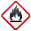
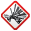
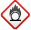

Bazı kimyasal maddeler kazara birbirleriyle karşılaştıklarında ciddi güvenlik sorunları ortaya çıkabilir. Normal koşullarda birbirleri ile tepkime vermeyen ve bir arada depolanabilen kimyasal maddeler birbiri ile geçimlidir. Bir araya geldiklerinde, kendiliğinden veya ışık, oksijen gibi bir etki ile tepkime vererek tehlikeli durumlara sebep olabilen kimyasal maddeler ise birbiri ile geçimsizdir.
Geçimsiz kimyasal maddelerin kazara birbiriyle karşılaşma olasılığı en aza indirilmelidir. Bu nedenle birbiri ile karıştırılacak veya depolanacak kimyasal maddelerin geçimlilik durumları bilinmelidir. Bu şekilde gruplandırılan kimyasal maddelerin birbirleri ile etkileşime girip, tehlikeli tepkimelere neden olmamaları için Kimyasal Madde Depolama Matrisi kullanılabilir. Bu matris kullanılırken kimyasal maddelerin tehlike piktogramlarından faydalanılır ve hangi sınıfın birlikte depolanıp depolanmaması gerektiği hakkında genel bilgi edinilebilir.
Yanda Kimyasal Madde Depolama Matrisinden bir bölüm verilmiştir.
 |
 |
 |
|||
|---|---|---|---|---|---|
| ✔ | ✖ | ✖ | ! | ✖ | |
| ✖ | ✔ | ✖ | ✖ | ✖ | |
| ✖ | ✖ | ✔ | ✖ | ✖ | |
| ! | ✖ | ✖ | ✔ | ✔ | |
| ✖ | ✖ | ✖ | ✔ | ✔ |
1. Aşağıdaki güvenlik uyarı işaretlerinin altlarına ne anlama geldiklerini yazınız. Bu işaretleri gördüğümüzde alınması gereken önlemlere örnek veriniz.
|
a
|
b
|
c
|
ç
|
d
|
|
|---|---|---|---|---|---|
| Anlamı | |||||
| Önlem |
2. Buna göre, verilen bilgileri ve Kimyasal Madde Depolama Matrisini göz önünde bulundurarak cümleleri uygun şekilde tamamlayınız.